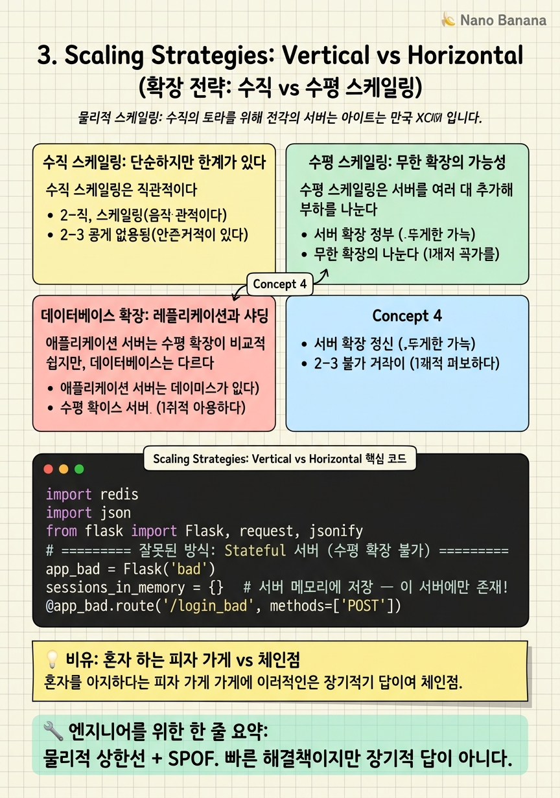

Scaling Strategies: Vertical vs Horizontal

🎯 학습 목표
- 수직 확장과 수평 확장의 차이와 트레이드오프를 설명할 수 있다
- 무상태(Stateless) 서버 설계가 수평 확장에 왜 필수인지 이해한다
- 데이터베이스 읽기 레플리케이션(Read Replica) 패턴을 안다
- 수평 확장 시 로드밸런서가 필요한 이유를 설명할 수 있다
- 면접에서 확장 병목 지점을 찾아 해결 방안을 제시할 수 있다
사용자가 늘어날 때 시스템을 어떻게 확장하는가? 이것이 스케일링의 핵심 질문이다. 두 가지 기본 전략이 있다 — 기존 서버를 더 강하게 만들거나(수직), 서버를 더 많이 추가하거나(수평). 초기에는 수직 확장이 간단하지만, 결국 수평 확장으로 전환해야 한다.
수직 스케일링(Vertical Scaling, Scale Up) = 기존 서버의 CPU, RAM, 디스크를 업그레이드한다. 코드 변경 없이 즉시 성능을 높일 수 있다.
수평 스케일링(Horizontal Scaling, Scale Out) = 동일한 서버를 여러 대 추가해 부하를 분산한다. 이론적으로 무한 확장이 가능하지만, 애플리케이션이 무상태(Stateless)로 설계되어야 한다.
대형 시스템(Google, Amazon, Netflix)은 모두 수평 확장을 기반으로 구축되어 있다. 이 챕터에서는 수평 확장이 왜 더 나은지, 그리고 수평 확장을 가능하게 하는 무상태 설계가 무엇인지 깊이 이해한다.
핵심 내용
수직 스케일링: 단순하지만 한계가 있다
수직 스케일링은 직관적이다. 서버가 느리면 RAM을 32GB에서 64GB로 늘리고, CPU를 더 빠른 것으로 교체한다. 코드는 전혀 바꿀 필요가 없다. 데이터베이스, 웹서버, 모든 것이 그대로 동작한다.
이 단순함이 수직 스케일링의 장점이다. 초기 스타트업에서 트래픽이 처음 급증할 때 가장 빠른 대응 방법은 서버 사양을 올리는 것이다. AWS에서는 인스턴스 타입을 t3.medium에서 m5.4xlarge로 변경하는 것이 5분이면 된다.
하지만 한계는 명확하다. 첫째, 물리적 상한선이 있다. 세상에서 가장 강력한 단일 서버도 결국 CPU 코어 수와 RAM 용량의 한계가 있다. 둘째, 단일 장애점(SPOF)이다. 아무리 좋은 서버도 하드웨어 장애, OS 패닉, 메모리 누수로 다운될 수 있다. 단일 서버에 모든 것을 집중하면 그 서버가 멈출 때 전체 서비스가 멈춘다. 셋째, 비용 비효율이다. 서버 사양이 올라갈수록 가격 대비 성능은 급격히 낮아진다.
수평 스케일링: 무한 확장의 가능성
수평 스케일링은 서버를 여러 대 추가해 부하를 나눈다. 서버 3대가 각각 1/3의 요청을 처리한다. 한 대가 다운되면 나머지 2대가 전체를 감당한다 — 결함 허용성(Fault Tolerance)이 생긴다.
수평 확장의 이론적 장점은 무한 확장 가능성이다. 트래픽이 3배 늘면 서버를 3배 추가하면 된다. 클라우드 환경에서는 Auto Scaling이 이를 자동으로 처리한다.
하지만 수평 확장에는 전제 조건이 있다 — 무상태(Stateless) 서버 설계다. 만약 사용자 A의 세션이 서버 1번 메모리에 저장되어 있다면, 그 다음 요청이 서버 2번으로 가면 로그인이 풀려버린다. 서버가 여러 대이면 어느 서버로 요청이 가더라도 동일하게 처리할 수 있어야 한다.
해결책은 세션, 사용자 상태를 서버 메모리가 아닌 외부 스토리지(Redis, 데이터베이스)에 저장하는 것이다. 이렇게 하면 어떤 서버로 요청이 가더라도 같은 Redis에서 상태를 읽어온다. 서버 자체는 완전히 무상태가 된다.
로드밸런서(Load Balancer) = 여러 서버 앞에 위치해 들어오는 요청을 적절히 분배하는 컴포넌트. 수평 확장의 핵심 인프라다.
데이터베이스 확장: 레플리케이션과 샤딩
애플리케이션 서버는 수평 확장이 비교적 쉽지만, 데이터베이스는 다르다. 모든 서버가 동일한 데이터베이스에 접근하기 때문에 데이터베이스가 새로운 병목이 된다.
읽기 레플리케이션(Read Replica) = 가장 흔한 첫 번째 해결책. 마스터 DB는 쓰기를, 레플리카 DB들은 읽기를 담당한다. 대부분의 서비스는 읽기가 쓰기보다 훨씬 많다(90:10 비율 이상). 읽기 트래픽을 여러 레플리카로 분산하면 마스터 DB의 부하가 크게 줄어든다.
샤딩(Sharding) = 데이터 자체를 여러 데이터베이스에 나누어 저장하는 방법. 사용자 ID를 기준으로 샤딩하면, 사용자 1~100만은 DB1에, 100만~200만은 DB2에 저장된다. 각 DB의 데이터 크기가 줄어들고, 쓰기도 분산된다. 하지만 여러 샤드에 걸친 JOIN이 복잡해지고, 샤드 재배분(Resharding)이 어렵다는 단점이 있다.
| 확장 방법 | 해결하는 문제 | 단점 | |---|---|---| | 읽기 레플리카 | 읽기 트래픽 분산 | 레플리케이션 지연, 쓰기는 여전히 단일 | | 샤딩 | 쓰기 트래픽 + 데이터 크기 | JOIN 복잡도 증가, 운영 복잡 |
💡 비유로 이해하기
수직 스케일링은 혼자 하는 피자 가게 주인이 더 빠른 오븐을 사고, 더 큰 주방으로 이사하는 것이다. 처음에는 효과가 있다. 오븐 하나로 시간당 10판 굽다가 20판을 굽게 된다. 하지만 결국 한 명의 사람이 할 수 있는 일의 양에는 한계가 있다. 그리고 그 사람이 아프면 가게가 닫힌다.
수평 스케일링은 체인점을 여는 것이다. 같은 레시피(코드)로 피자를 만드는 가게를 여러 곳에 연다. 한 가게가 불이 나도(서버 다운) 다른 가게들이 영업을 계속한다. 그리고 수요가 늘면 가게를 더 열면 된다.
단, 체인점이 되려면 '표준화'가 필요하다 — 각 가게가 같은 재료(공유 스토리지), 같은 레시피(무상태 서버)를 사용해야 한다. 만약 가게마다 다른 재료를 쓰면(서버 메모리에 상태 저장) 고객이 어느 가게에 가도 같은 맛을 경험할 수 없다.
💻 코드 예시
유상태(Stateful) 서버와 무상태(Stateless) 서버의 차이를 코드로 보여준다. 세션을 서버 메모리에 저장하면 수평 확장이 불가능하고, Redis에 저장하면 가능해진다.
import redis
import json
from flask import Flask, request, jsonify
# ========== 잘못된 방식: Stateful 서버 (수평 확장 불가) ==========
app_bad = Flask('bad')
sessions_in_memory = {} # 서버 메모리에 저장 — 이 서버에만 존재!
@app_bad.route('/login_bad', methods=['POST'])
def login_bad():
user_id = request.json['user_id']
# 서버 1의 메모리에만 저장 → 다음 요청이 서버 2로 가면 세션 없음!
sessions_in_memory[f'session_xyz'] = {'user_id': user_id}
return jsonify({'session_id': 'session_xyz'})
# ========== 올바른 방식: Stateless 서버 (수평 확장 가능) ==========
app_good = Flask('good')
r = redis.Redis(host='redis-cluster', port=6379) # 외부 공유 스토리지
@app_good.route('/login_good', methods=['POST'])
def login_good():
user_id = request.json['user_id']
session_id = f'sess_{user_id}_abc123'
# Redis에 저장 → 어느 서버에서든 읽을 수 있음!
r.setex(
name=session_id,
time=3600, # 1시간 TTL
value=json.dumps({'user_id': user_id, 'role': 'user'})
)
return jsonify({'session_id': session_id})
@app_good.route('/profile')
def profile():
session_id = request.headers.get('X-Session-ID')
# 서버 2, 3, 4 어느 서버에서든 Redis에서 읽을 수 있음
session = r.get(session_id)
if not session:
return jsonify({'error': 'Unauthorized'}), 401
return jsonify(json.loads(session))sessions_in_memory 딕셔너리는 서버 1의 메모리에만 존재한다. 로드밸런서가 다음 요청을 서버 2로 보내면 세션을 찾을 수 없어 인증이 풀린다. Redis를 사용하면 모든 서버 인스턴스가 동일한 Redis 클러스터에서 세션을 읽고 쓴다. 어느 서버로 요청이 가든 상관없다 — 이것이 무상태 설계다.
🏭 현업에서의 평가
✅ 시니어가 보는 것
- 읽기/쓰기 비율을 먼저 파악하고 그에 맞는 확장 전략을 선택하는가
- Stateless 설계를 자연스럽게 적용하는가 (세션을 Redis에 저장)
- 데이터베이스 레플리케이션 vs 샤딩을 언제 선택하는지 구분하는가
- Auto Scaling과 그 트리거 조건(CPU, 메모리, 큐 길이)을 아는가
⚠️ 레드 플래그
- 수평 확장만 언급하고 무상태 설계가 전제임을 모름
- 데이터베이스 확장 방법(레플리케이션, 샤딩)을 모름
- '서버를 더 사면 됩니다'라는 막연한 답변
- CAP 정리에서 샤딩 시 Consistency 트레이드오프를 언급 못 함
🎤 예상 인터뷰 질문
- 현재 단일 서버로 초당 100 RPS를 처리하는데, 내일 1만 RPS가 예상됩니다. 어떻게 하겠습니까?
- 세션 기반 인증을 쓰는 서비스를 수평 확장하려면 무엇을 바꿔야 하나요?
- 데이터베이스 레플리케이션 지연(Replication Lag)이 문제가 되는 시나리오는 무엇인가요?
✨ 핵심 요약
수직 확장의 한계
물리적 상한선 + SPOF. 빠른 해결책이지만 장기적 답이 아니다.
수평 확장의 전제
Stateless 서버 설계. 세션과 상태를 서버 메모리가 아닌 Redis/DB에 저장한다.
결함 허용성
수평 확장 시 한 서버가 죽어도 나머지가 서비스를 유지한다.
읽기 레플리케이션
읽기 부하가 크다면 Read Replica를 추가해 마스터 DB 부하를 줄인다.
샤딩의 복잡성
샤딩은 쓰기 확장이 필요할 때 사용하지만, 크로스 샤드 JOIN과 재샤딩이 복잡하다.
Auto Scaling
클라우드에서는 CPU/메모리 임계값 기반으로 서버를 자동으로 추가/제거한다.
로드밸런서 필수
수평 확장된 서버들 앞에 로드밸런서 없이는 트래픽을 분산할 수 없다.